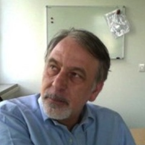
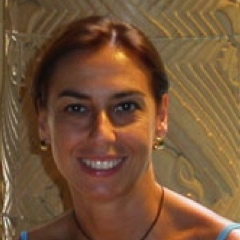
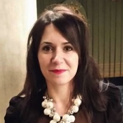

Officers
Nicola Torelli - Coordinator
Nicola Torelli currently teaches Advanced Statistics in the Master of Statistics and Actuarial Sciences at the University of Trieste (Italy), Statistical method for Data Science in the Master in Scientific Computing and Data Science and Generalized Linear Mixed Models for Phd students at the university of Padua. He has been President of Italian Statistical Society from 2012 to 2016 and is Member of Nucleo di Valutazione of the University of Padua. In 1991,1993 and 2003 he has been Visiting Professor at the Department of Mathematics and at the Centre for Survey Research in the University of Southampton (UK). At the University of Trieste Nicola Torelli held many positions: he has been Head of Department twice (2006-2008 and 2010-2012) and he was Coordinator of Master Degree in Statistics and Actuarial Science (2004-2007). He also was Professor of Statistics at the University of Padova - Italy (1989-1992 and 1995-2000) and at the University of Bologna - Italy (1992-1995). His research interests ranges from applied (Bayesian) statisticsto supervised and unsupervised statistical learning methods.
Rosanna Verde - Vice Coordinator
Rosanna Verde is full professor of Statistics at Department of Mathematics and Physics of the University of the Campania “Luigi Vanvitelli”. She is associate member of the equipe "Apprentissage Artificiel et Applications" du LIPN Laboratory of Informatics of the Université Paris 13 – Institut Galilée, France (since 2018). The main fields of research are: Multivariate Data Analysis, Knowledge extractions from complex data, Classification, Data Mining of large scale data, Data Stream Analysis, Functional Data Analysis. Actually, she works especially on Distributional Data Analysis. She has been supervisor of many PhD theses at the Doctorates in Statistics and in Social and Statistics Sciences of the University of Naples. She has been member of PhD and DHR Committees at foreign Universities (Lyon 2, Orleans, Paris IX Dauphine, Montpellier, Paris 13, Caddi Ayad. Marrakesh).
Antonio Canale

Antonio Canale is Associate Professor of Statistics at the Department of Statistical Sciences, University of Padua. His research interests include Bayesian nonparametric methods and models, functional data analysis, statistical learning and data mining. He is author or coauthor of a number of papers in the fields of methodological and applied statistics, and he has been a member of the scientific committees of national and international conferences.
Paola Cerchiello
Paola Cerchiello is Assistant Professor of Statistics at the Department of Economics and Management of the University of Pavia. Her research activity is mainly devoted to the study of statistical models for unstructured and complex data in economics and finance. She focuses on text data analysis, systemic risk and reputational risk, sentiment analysis, deep learning, ICOs and fintech.
Simone Vantini
Simone Vantini is Associate Professor of Statistics at Politecnico di Milano, Italy. He has published widely in Functional Data Analysis and his current research interests include object-oriented data analysis, high-dimensional data analysis, permutation testing, dimension reduction, blind source separation, risk analysis and in general statistical applications motivated by business or industrial problems.